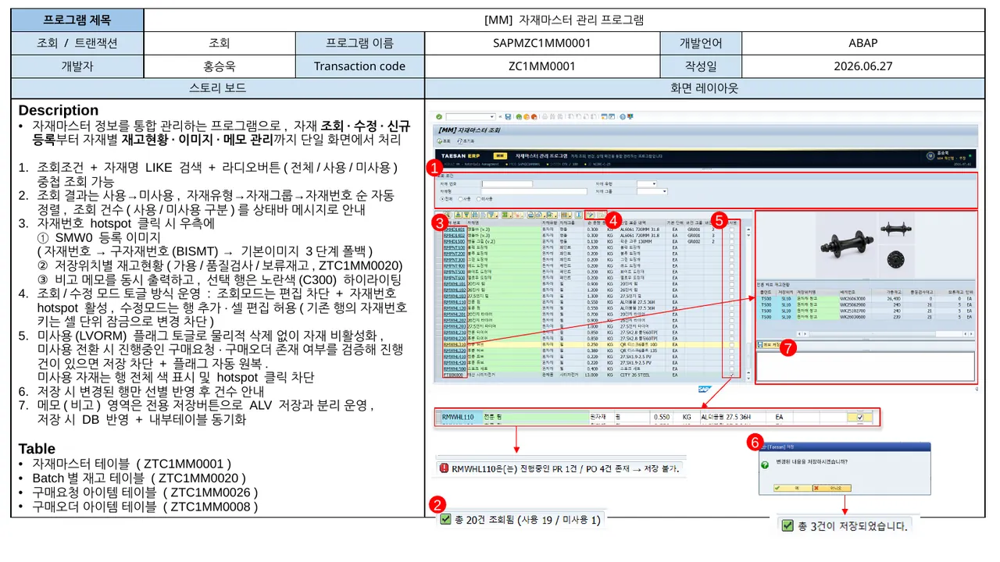
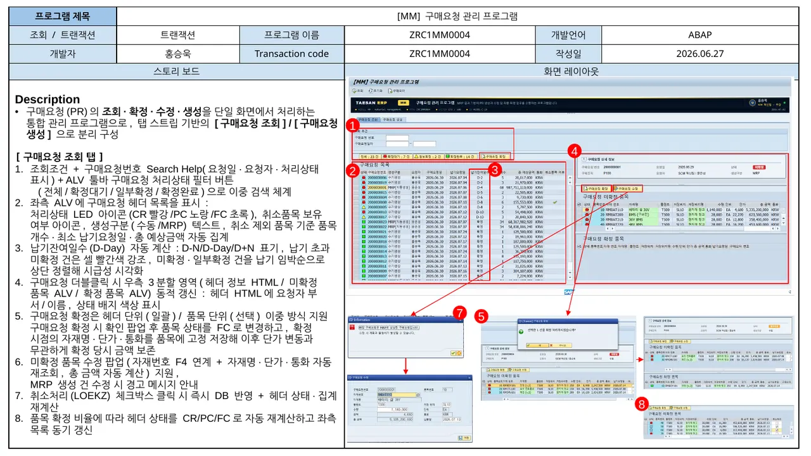
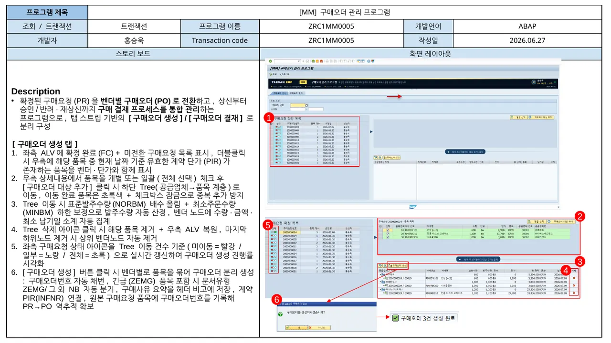
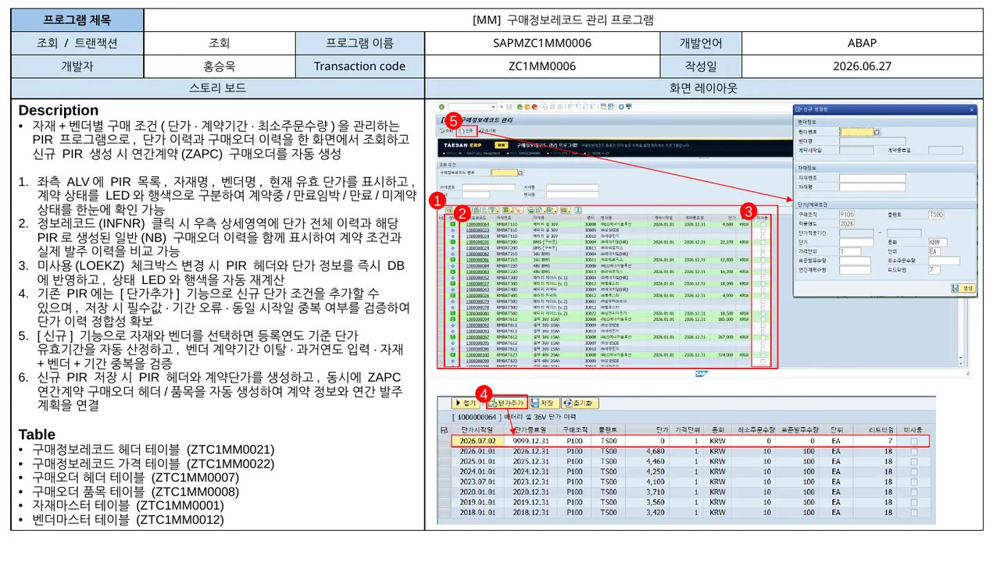
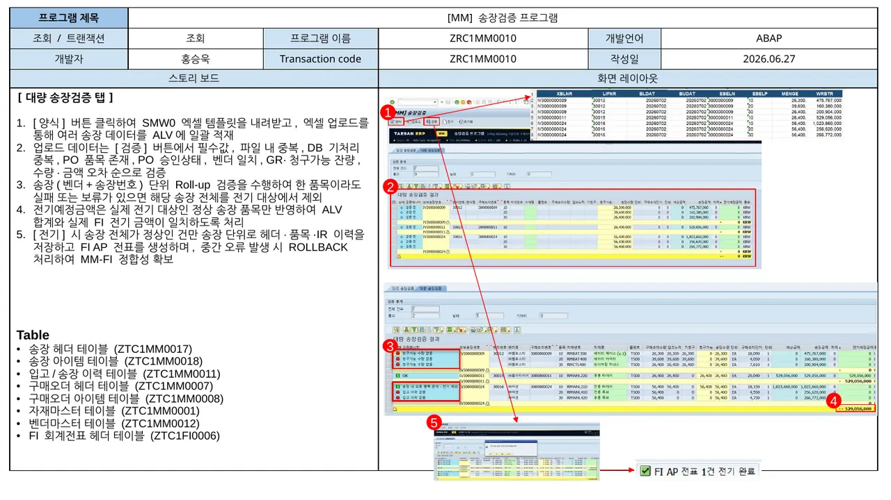
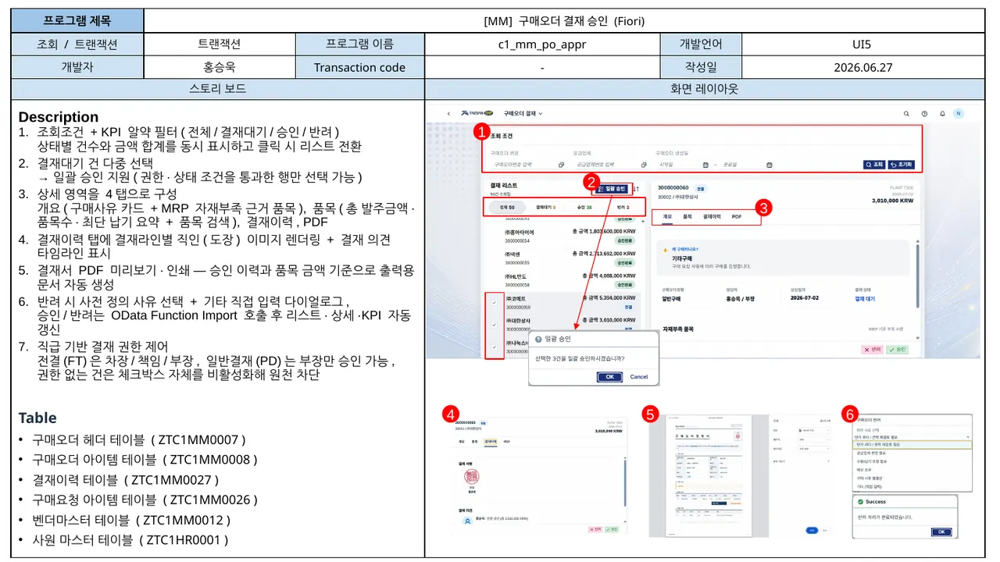
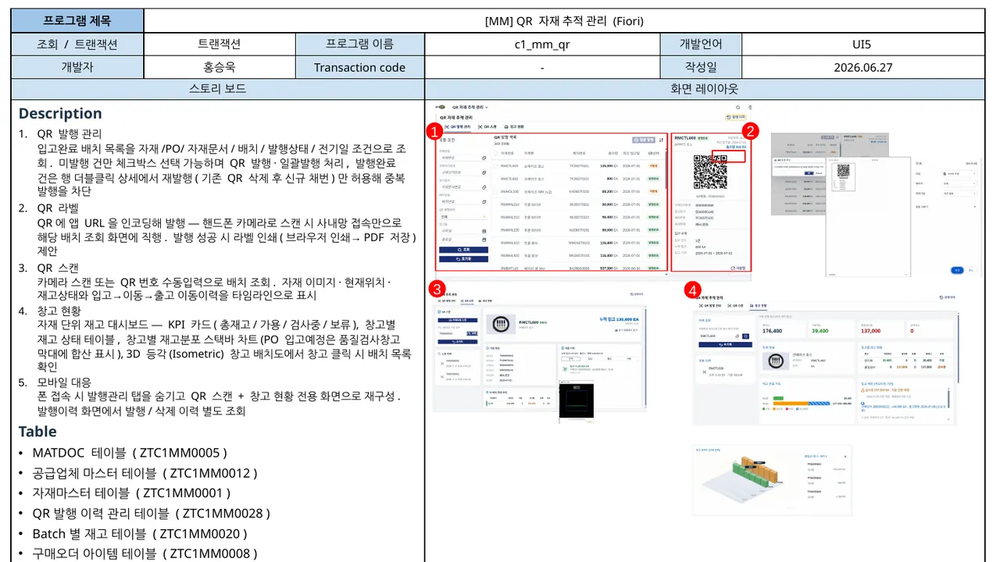
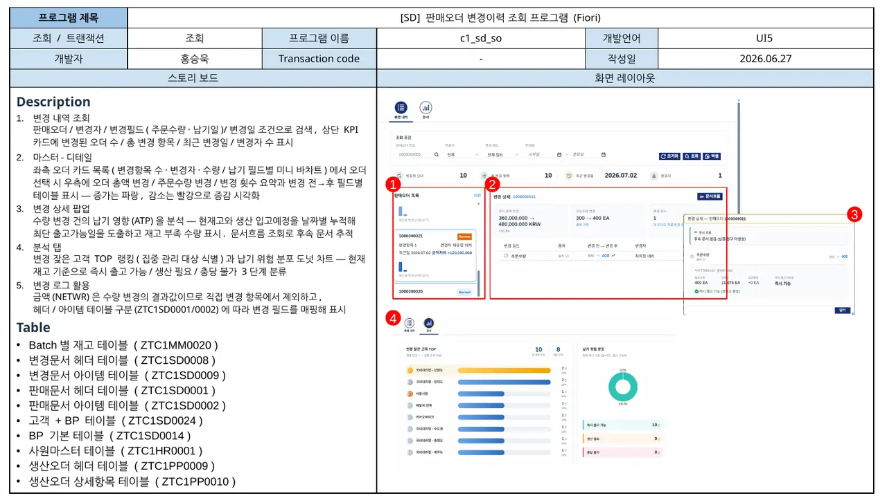

End-to-End 관점
단위 화면이 아니라 PR→PO→입고이력→IV→FI로 이어지는 문서와 데이터 흐름을 기준으로 설계했습니다.
SAP S/4HANA Full-Custom 프로젝트에서 자재마스터·구매요청·구매오더·송장검증을 설계하고, RAP/OData와 Fiori 화면까지 연결했습니다.
단위 화면이 아니라 PR→PO→입고이력→IV→FI로 이어지는 문서와 데이터 흐름을 기준으로 설계했습니다.
확정 단가 보존, 송장 단위 Roll-up, 단일 COMMIT/ROLLBACK 등 저장 시점과 트랜잭션 경계를 명확히 했습니다.
ABAP·CBO·CDS·RAP·OData부터 SAPUI5/Fiori 화면까지 기능이 실제로 연결되는 풀스택 경험을 쌓았습니다.
Project Scope
기준정보와 구매 문서를 연결하고, 송장검증 결과가 회계 전표로 이어질 때까지 핵심 구간을 구현했습니다.
Selected Work
채용 담당자가 빠르게 확인할 수 있도록 핵심 기능, 실제 화면, 대표 소스를 한 카드에 묶었습니다.





Fiori / UI5
CDS·RAP·OData로 데이터를 노출하고, SAPUI5 화면에서 승인·추적·분석이 가능하도록 구현했습니다.



Technical Decisions
단순 기능 구현보다 데이터 유실과 모듈 간 불일치를 막는 구조적 해결에 집중했습니다.
FI 함수 내부 COMMIT을 제거하고 호출부에서 단일 COMMIT / ROLLBACK을 통제해 MM 이력과 FI 전표가 함께 반영되도록 했습니다.
이벤트 컨텍스트에서 TYPE E 대신 표시용 메시지와 오류 플래그를 사용하고, 저장 로직을 차단해 입력 데이터 유실을 방지했습니다.
DB 원본을 먼저 적재하고 화면에서 관리하는 값만 덮어쓰는 원본 우선 저장 패턴으로 필드 유실을 막았습니다.
Deliverables
사이트에서 핵심을 먼저 보고, 필요한 경우 PDF 스펙서와 실제 GitHub 소스로 더 깊게 확인할 수 있습니다.
각 프로그램의 목적, 핵심 기능, 화면 구성, 사용 테이블을 한눈에 확인할 수 있도록 정리했습니다. 채용 검토용 기본 문서는 PDF로 바로 열립니다.
Certifications
C_ABAPD_2601
C_FIORD
SQLD